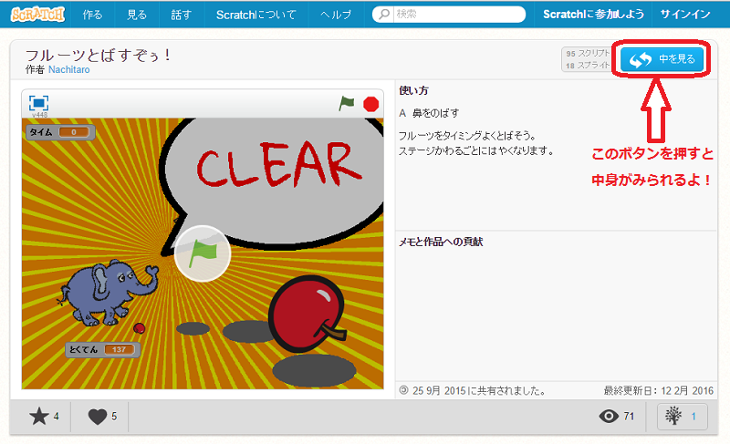

Scratch(スクラッチ)とは初心者が最初に正しい構文の書き方を覚えること無く結果を得られるプログラミング言語学習環境である．
MITメディアラボが開発し，遊び心のある実験やアニメーション，ゲームなどの製作を通してさらなる学習のやる気を起こさせることを意図している．
日本語でプログラムできるので，プログラミング初心者がみても，とてもわかりやすくなっている．Scratchはいろいろなことができ，初心者だけでなく上級者でも楽しめるものとなっている．

このサイトで紹介しているゲームはすべてScratchで作られています！このゲームであそぶボタンをおしてとんだリンク先の右上にある『中をみる』ボタンをおすと，
そのゲームが作られているプログラムをみることができます．Scratchの面白さ，楽しさ，わかりやすさを伝えてプログラミングに興味をもってもらいたい
と思いこのサイトを作成しました．ぜひ，見た目だけでなく中身も見てみてね！